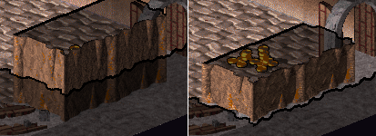
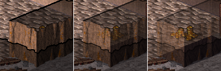

ue to variations in personal tastes and conceptions of how the game should do things, there are options you can set to change how it behaves.
This manual will not go into all the details of how NetHack/SLASH'EM options can be set; to learn about those, please read the orginal Guidebook.
9.1 Game options
There are 2 main ways to set game options: Ingame with the O command and by editing the configuration file. Options set ingame do not persist; editing the config file is the only way to set an option permanently. Additionally, some options can only be set in the config file, because they no longer make sense or are immutable once the game has started.
On unix(-like OSes) the config-file is called either “.nethackrc”
for vulture-nethack or “.slashemrc” for vulture-slashem and is located in your home directory.
On Windows the file is always called “defaults.nh” and is located in the game's
installation directory
These options are available:
| align | Your starting alignment (align:lawful, align:neutral, or align:chaotic). You may specify just the first letter. The default is to randomly pick an appropriate alignment. Cannot be set with the O command. |
| autodig | Automatically dig if you are wielding a digging tool and moving into a place that can be dug (default false). |
| autopickup | Automatically pick up things onto which you move (default on). See pickup_types to refine the behavior. |
| autoquiver | This option controls what happens when you attempt the f (fire) command with an empty quiver. When true, the computer will fill your quiver with some suitable weapon. Note that it will not take into account the blessed/cursed status, enchantment, damage, or quality of the weapon; you are free to manually fill your quiver with the Q command instead. If no weapon is found or the option is false, the t (throw) command is executed instead. (default false) |
| catname | Name your starting cat (ex. “catname:Morris”). Cannot be set with the O command. |
| character | Pick your type of character (ex. “character:Monk”); synonym for “role”. See “name” for an alternate method of specifying your role. Normally only the first letter of the value is examined; the string “random” is an exception. |
| checkpoint | Save game state after each level change, for possible recovery after program crash (default on). |
| cmdassist | Have the game provide some additional command assistance for new players if it detects some anticipated mistakes (default on). |
| confirm | Have user confirm attacks on pets, shopkeepers, and other peaceable creatures (default on). |
| disclose | Controls options for disclosing various information when the
game ends (defaults to all possibilities being disclosed). The
possibilities are:
|
| dogname | Name your starting dog (ex. “dogname:Fang”). Cannot be set with the O command. |
| female | An obsolete synonym for “gender:female”. Cannot be set with the O command. |
| fixinv | An object's inventory letter sticks to it when it's dropped (default on). If this is off, dropping an object shifts all the remaining inventory letters. |
| font_text | The full filename (including the path) of a TrueType or OpenType font to use instead of the default one (Bitstream Vera Serif) |
| fruit | Name a fruit after something you enjoy eating (ex. “fruit:mango”) (default “slime mold”). Basically a nostalgic whimsy that NetHack uses from time to time. You should set this to something you find more appetizing than slime mold. Apples, oranges, pears, bananas, and melons already exist in NetHack, so don't use those. |
| gender | Your starting gender (gender:male or gender:female). You may specify just the first letter. Although you can still denote your gender using the “male” and “female” options, the “gender” option will take precedence. The default is to randomly pick an appropriate gender. Cannot be set with the O command. |
| horsename | Name your starting horse (ex. “horsename:Trigger”). Cannot be set with the O command. |
| lootabc | Use the old ‘a’, ‘b’, and ‘c’ keyboard shortcuts when looting, rather than the mnemonics ‘o’, ‘i’, and ‘b’ (default off). |
| Enable mail delivery during the game (default on). | |
| male | An obsolete synonym for “gender:male”. Cannot be set with the O command. |
| menustyle | Controls the interface used when you need to choose various objects (in response to the Drop command, for instance). The value specified should be the first letter of one of the following: traditional, combination, partial, or full. Traditional was the only interface available for earlier versions; it consists of a prompt for object class characters, followed by an object-by-object prompt for all items matching the selected object class(es). Combination starts with a prompt for object class(es) of interest, but then displays a menu of matching objects rather than prompting one-by-one. Partial skips the object class filtering and immediately displays a menu of all objects. Full displays a menu of object classes rather than a character prompt, and then a menu of matching objects for selection. |
| name | Set your character's name. You can also set your character's role by appending a dash and one or more letters of the role (that is, by suffixing one of -A -B -C -H -K -M -P -Ra -Ro -S -T -V -W). If -@ is used for the role, then a random one will be automatically chosen. Cannot be set with the O command. |
| packorder | Specify the order to list object types in (default ``")[%?+!=/(*`0_''). The value of this option should be a string containing the symbols for the various object types. Any omitted types are filled in at the end from the previous order. |
| pettype | Specify the type of your initial pet, if you are playing a character class that uses multiple types of pets; or choose to have no initial pet at all. Possible values are “cat”, “dog” and “none”. Cannot be set with the O command. |
| pickup_burden | When you pick up an item that would exceed this encumbrance level (Unburdened, Burdened, streSsed, straiNed, overTaxed, or overLoaded), you will be asked if you want to continue. (Default ‘S’). |
| pickup_types | Specify the object types to be picked up when autopickup is on. Default is all types. |
| prayconfirm | Prompt for confirmation before praying (default on). |
| pushweapon | Using the ‘w’ (wield) command when already wielding something pushes the old item into your alternate weapon slot (default off). |
| race | Selects your race (for example, “race:human”). Default is random. Cannot be set with the O command. |
| rest_on_space | Make the space bar a synonym for the ‘.’ (rest) command (default off). |
| role | Pick your type of character (ex. “role:Samurai”); synonym for “character”. See “name” for an alternate method of specifying your role. Normally only the first letter of the value is examined; ‘r’ is an exception with “Rogue”, “Ranger”, and “random” values. |
| runmode | Controls the amount of screen updating for the map window when
engaged in multi-turn movement (running via shift+direction or
control+direction and so forth, or via the travel command or
mouse click). The possible values are:
|
| safe_pet | Prevent you from (knowingly) attacking your pets (default on). |
| scores | Control what parts of the score list you are shown at the end (ex. “scores:5 top scores/4 around my score/own scores”). Only the first letter of each category (‘t’, ‘a’, or ‘o’) is necessary. |
| showexp | Show your accumulated experience points on bottom line (default off). |
| showrace | Display yourself as the glyph for your race, rather than the glyph for your role (default off). Note that this setting affects only the appearance of the display, not the way the game treats you. |
| sortpack | Sort the pack contents by type when displaying inventory (default on). |
| sparkle | Display a sparkly effect when a monster (including yourself) is hit by an attack to which it is resistant (default on). |
| suppress_alert | This option may be set to a NetHack version level to suppress alert notification messages about feature changes for that and prior versions (ex. “suppress_alert:3.3.1”). |
| time | Show the elapsed game time in turns on bottom line (default off). |
| tombstone | Draw a tombstone graphic upon your death (default on). |
| toptenwin | Put the ending display in a NetHack window instead of on stdout (default off). Setting this option makes the score list visible when a windowing version of NetHack is started without a parent window, but it no longer leaves the score list around after game end on a terminal or emulating window. |
| travel | Allow the travel command (default on). Turning this option off will prevent the game from attempting unintended moves if you make inadvertent mouse clicks on the map window. |
| verbose | Provide more commentary during the game (default on). |
| windowtype | Select which windowing system to use, such as “tty” or “X11” (default depends on version). Cannot be set with the O command. To play vulture you should generally set this to “vulture” :-D |
9.2 Interface options
The interface options can be set in the global configuration “vulture.conf” file in the config subdirectory, in a per-user configuration file which overrides the global one as well as ingame. Additionally, if options are changed ingame they are written back to the per-user configuration file. The best way to change interface options is to simply use the dialog ingame.
| recenter | If you set this to 1, the game will keep the main view
centered on your character during movement. If you set this to 0, the game will recenter
the main view only when your character moves off-screen. (You can of course scroll
the view yourself to see more.) If you are playing on a slow computer turning this off is a good idea, because less of the screen will be redrawn after each move, making the game run faster. |
| play_music & play_effects |
Set these to 1 if you want to hear music and sound effects, or to 0 if you prefer silence. |
| wall_style | You may play with full height or half-height walls. Half-height walls are less realistic, but they obstruct your view less.  |
| wall_opacity | You may set the opacity of your dungeon walls. A value of 1.0 means fully opaque,
0 is fully transparent. The image below shows walls at 1.0, 0.75 and 0.5  |
| screen_xsize & screen_ysize |
This is the screen resolution (width and height) that you want to use while playing. Larger resolutions show you more of the dungeon at once. The minimum is 510x640. |
| fullscreen | Switch between fullscreen and windowed mode. |
| show helpbar | Show the lower toolbar. |
| show actionbar | Show the upper toolbar. |
| show minimap | Show the minimap. |
| message lines | The maximum height of the message window in lines. |
| Disable key rotation | By default the numpad movement keys are rotated to match the isometric view. If you are used to a more traditional interface you may wish to disable the rotation. |
| makros 1-6 | User-defined sequences of actions. The “Makros” section describes how they work |
9.3. Event sound options
The file vulture_sounds.conf contains event sound options. You can add your own custom sound effects or music to NetHack events by modifying this file. These sounds are played when a particular message is sent to NetHack's message window. One message plays at most one sound (the first applicable one in the file).
Sounds can be OGG files or CD audio tracks.
The format is: [search string],SOUNDTYPE,[filename] where
- [search string] = the message string (complete or partial) that triggers the sound.
- SOUNDTYPE = SND, MUS, CDAU, RSNG or NONE.
- SND plays an OGG sound effect
- MUS plays an OGG music file
- CDAU plays a track from an audio CD
- RSNG plays a random piece of background music
- NONE can be used to exclude messages (eg. 'restore' is not the same as 'store')
- [filename] = name of the sound file. If SOUNDTYPE is RSNG or NONE, then this value is not used. If SOUNDTYPE is CDAU, give the track number here (for example, [01]).
The file contains extensive comments and the existing entries are good patterns to follow.